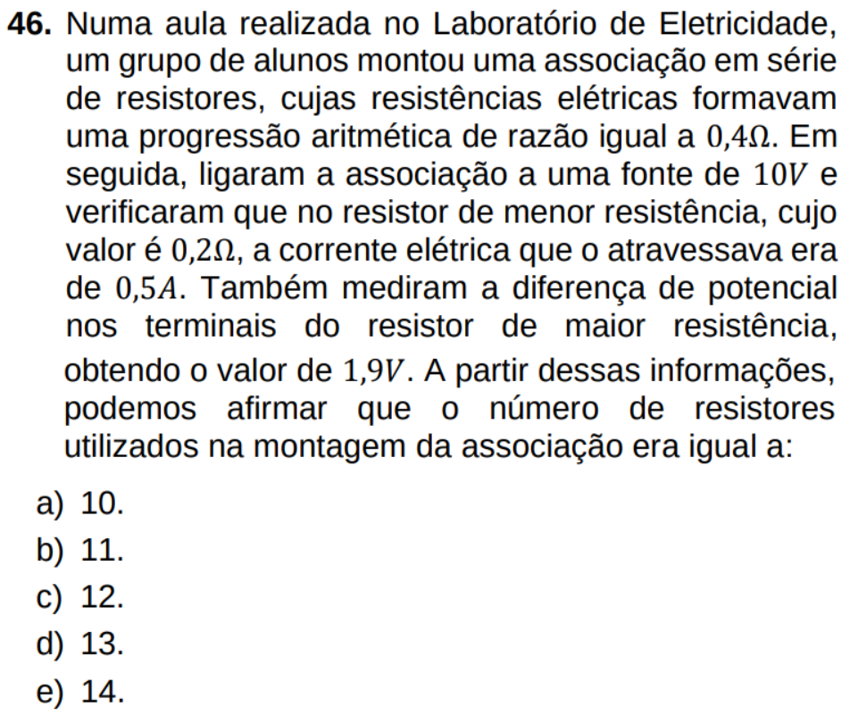
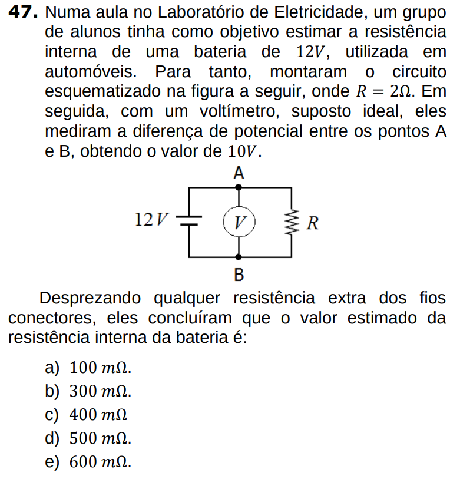
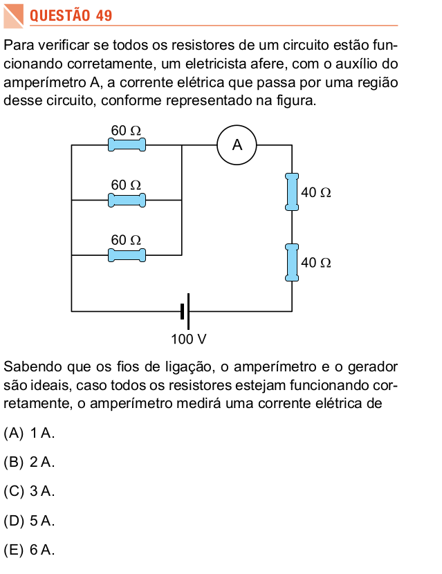
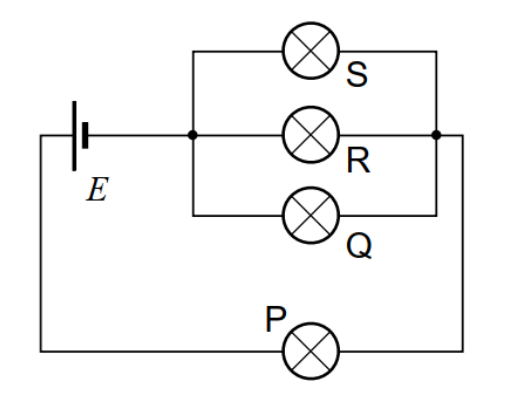

Table of Contents
Física 3 - Exercícios e problemas - Unidade 2
tensão = energia por carga (\(U = \frac{E}{q}\))
Figura 1
Figura 1: Linhas de potencial em uma distribuição plana de carga elétrica.

Fonte: Paulagf27, CC BY-SA 4.0, via Wikimedia Commons


{kind=link}
Questão 1 (figura 1)
A imagem mostra duas placas: uma com 40 V e outra com 0 V. Suponha que uma carga de \( q = 1\,\mu C \) (microcoulomb) seja deslocada da placa positiva para a negativa. Qual é a energia potencial elétrica perdida por essa carga nesse deslocamento?
| a) 40 μJ | b) 20 μJ | c) 0 μJ | d) 1 J |
Questão 2 (figura 2)
Observe as setas vermelhas apontando da placa de 40 V para a de 0 V. Isso indica:
a) O campo elétrico aponta no sentido do aumento da energia potencial.
b) O campo elétrico aponta para o lado positivo.
c) O campo elétrico aponta no sentido de queda de potencial elétrico.
d) A corrente elétrica está indo do menor para o maior potencial.
Questão 3 (figura 3)
Uma carga de \( 2\,\mu C \) é deslocada da linha de 30 V para a linha de 10 V. Qual é a variação da energia elétrica?
| a) 40 μJ | b) 20 μJ | c) –40 μJ | d) –20 μJ |
Potência, corrente e tensão
Questão 1
Uma lâmpada elétrica funciona com uma tensão de 120 V e consome uma corrente de 0,5 A. Qual é a potência dissipada por essa lâmpada?
| a) 30 W | b) 60 W | c) 240 W | d) 60 kW |
Questão 2
Um chuveiro elétrico opera com potência de 4800 W e está ligado a uma rede de 220 V. Qual é a corrente que circula pelo chuveiro?
| a) 10 A | b) 20 A | c) 22 A | d) 48 A |
Questão 3
Se a corrente elétrica que percorre um aparelho se mantiver constante, o que acontecerá com a potência dissipada se a tensão aplicada for dobrada?
a) A potência será dividida pela metade
b) A potência permanecerá constante
c) A potência será duplicada
d) A potência será quadruplicada
Lei de Ohm
Questão 1
Um resistor está ligado a uma fonte de 12 V e a corrente que passa por ele é de 3 A. Qual é o valor da resistência elétrica desse resistor?
| a) 4 Ω | b) 9 Ω | c) 36 Ω | d) 15 Ω |
Questão 2
Um resistor de 10 Ω é percorrido por uma corrente elétrica de 2,5 A. Qual é a diferença de potencial (tensão) aplicada nesse resistor?
| a) 4 V | b) 12,5 V | c) 25 V | d) 40 V |
Questão 3
Em um circuito simples com um resistor, o que acontece com a corrente elétrica se mantivermos a resistência constante e dobrarmos a tensão?
a) A corrente será reduzida à metade.
b) A corrente permanecerá constante.
c) A corrente será duplicada.
d) A corrente será quadruplicada.
Gráfico 1
Gráfico 1: Tensão elétrica e resistência de um condutor.

Questão - (gráfico 1)
Qual é a resistência elétrica do condutor representado no gráfico 1 acima?
a) \(1 \Omega\) b) \(2 \Omega\) c) \(5 \Omega\) d) \(10 \Omega\) e) \(15 \Omega\)Questão - (gráfico 1)
Qual é a potência de disspação de energia, do resistor representado no gráfico 1, quando a tensão for de \(10\,V\)
a) \(2 W) b) 20 W c) 200 W d) 40 F e) 400 WAssociação de resistores
Figura 4
Figura 4: Resistores \(R_1\) e \( R_2\) em série.

Questão 1 (figura 4)
Qual é a resistência equivalente à ligação do circuito da imagem, se os resistores tem, respectivamente, valores \(4\Omega\) e \(2\Omega\)?
a) \(10 \Omega\) b) \(12 \Omega\) c) \(5\Omega\) d) \(8\Omega\) e) \(6\Omega\)Questão 2 (figura 4)
Qual a corrente estabelecida no circuito da figura 4, se a tensão elétrica for de \(10\,V\)?
Questão 3 (figura 4)
Calcule:
a) A potência fornecida pela fonte;
b) A potência dissipada no resistor \(R_1\)
c) A potência dissipada no resistor \(R_2\)
Figura 5
Figura 4: Resistores \(R_1\) e \( R_2\) em série.

Questão 4 (figura 5)
Qual é a resistência equivalente à ligação do circuito da imagem, se or resistores tem, respectivamente, valores \(6\Omega\) e \(3\Omega \)?
a) 0,1 \(\Omega\) b) 1,0 \(\Omega\) c) 2,0\(\Omega\) d) 3,0 \( \Omega\) e) 5,0\(\Omega\)Questão 5 (figura 5)
Questão 6 (figura 5)
Qual a corrente estabelecida no circuito da figura 4, se a tensão elétrica for de \(10\,v\)?
Questão 7 (figura 5)
Calcule:
a) A potência fornecida pela fonte;
b) A potência dissipada no resistor \(R_1\)
c) A potência dissipada no resistor \(R_2\)
Questões integradas e questões de vestibulares
Questão 1 - PSC-3-2023

Questão 2 - PSC-3-2023

Questão 3 - SIS2-2024

Quetão 4 - OBF-2023
O circuito da figura mostra quatro lâmpadas iguais, idêntica pelas letras P, Q, R e S, todas acesas, conectadas a uma fonte de corrente contínua E. Se a lâmpada Q é desconectada, qual das seguintes afirmações é verdadeira?

a) As lâmpadas P, R e S permanecem igualmente brilhantes.
b) A lâmpada P é mais brilhante do que antes, mas não tão brilhante do que R e S são agora.
c) A lâmpada P é menos brilhante do que antes, e não tão brilhante do que R e S são agora.
d) A lâmpada P é mais brilhante do que antes, e também mais brilhante do que R e S são agora.
e) A lâmpada P é menos brilhante do que antes, mas mais brilhante do que R e S são agora.